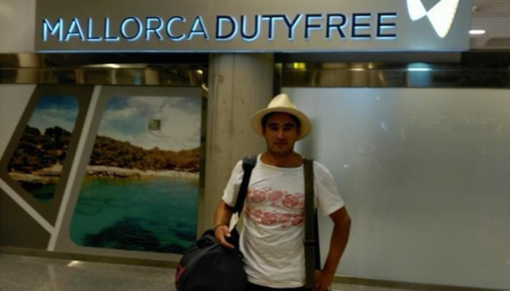
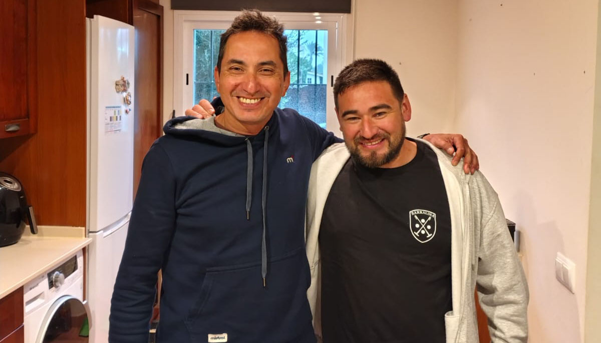
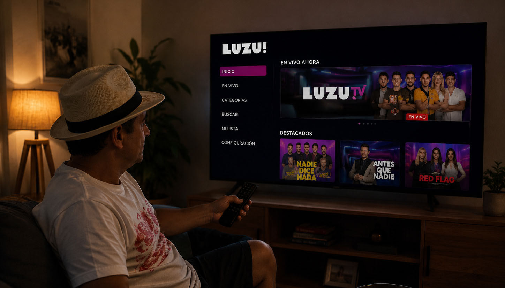
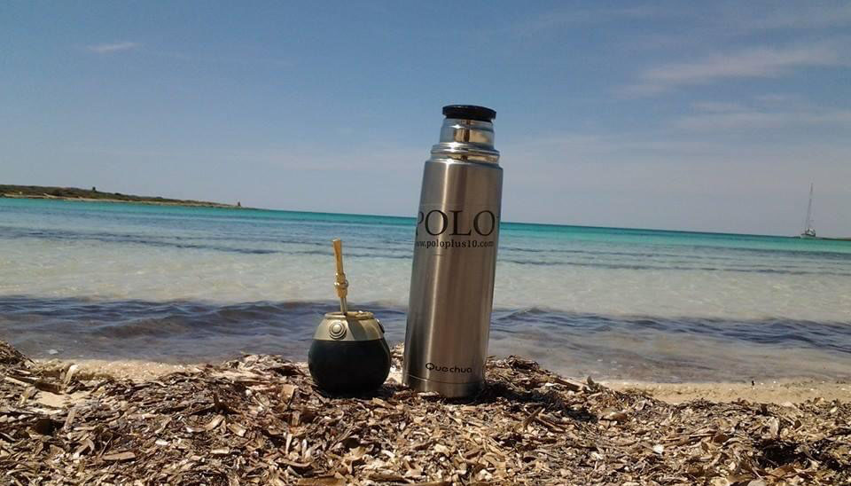
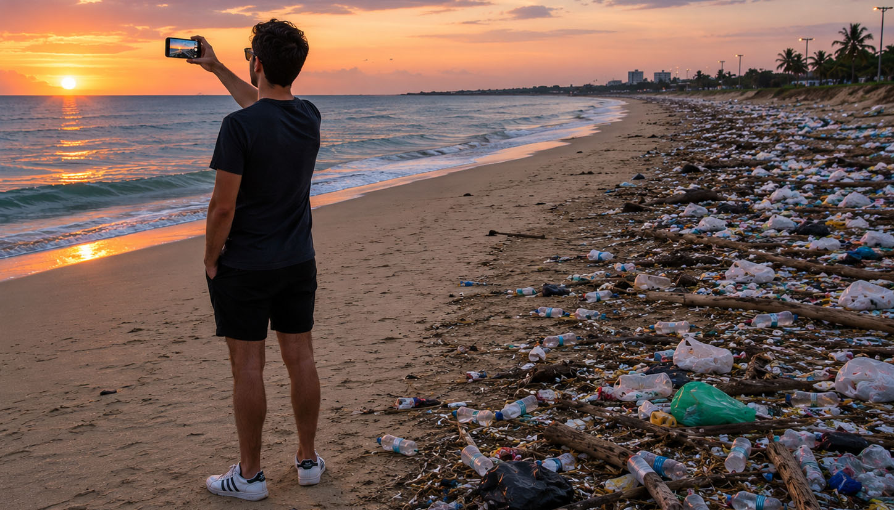
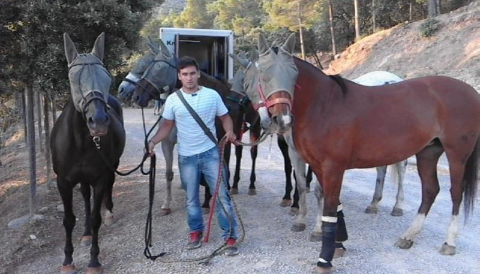

"Me fui del país por trabajo. Primero me fui a Venezuela, estuve trabajando cuatro temporadas y después me volví una temporada a Argentina y me salió para venirme 8 meses a Mallorca, donde hice el contacto para Francia y ahí estuve viajando casi cuatro años a Francia y después en el 2019 volví a Mallorca hasta ahora."

Pipo afirma que su relación con su familia nunca cambó, salvo que te pelees, esta relación según el argentino nunca cambia. Pero declara que la relación con amigo si cambia al no estar en permanente contacto.
Pero con los amigos amigos más cercanos, aquellos que "están contados con los dedos", la relación sigue igual.
"Creo que sigo siendo parte de la vida de ellos por más que no esté."

Pipo anuncia que las redes no son capaces de reemplazar a nuestros seres queridos. WhatsApp es el medio de preferencia por el cual se comunica con familiares y amigos con los que comparte a través de grupos.
Para ponerse en contacto con la situación del país se utilizan redes como Facebook e Instagram funcionan como noticieros. Además de plataformas de streaming como LUZU.

Pipo afirma que vivir afuera no te cambia, no perdés las costumbres. Siempre encontramos algún argentino con el cual compartir un mate o hacer parte a tus amigos extranjeros en tradiciones como un asado de domingo.
El argentino afirma que su estilo de vida es bastante bueno, mejor al de Argentina, debido al trabajo y que siempre se encuentras posibilidades para que te vaya mejor en la vida.
"Es mucho mejor la calidad de vida acá que haya"

Es muy difícil creer todo lo que se ve en las redes de Argentina, Pipo opina que distorsionan mucho lo que sucede y nunca termina de entender que es verdad y que no.
Nos habla sobre una "felicidad del flash", donde la foto que te sacas en la playa oculta todo lo malo que aparece cuando la cámara se apaga.

Viajar y empezar una nueva vida en otro país es una experiencia transformadora. Por eso antes de tomar la decisión de irte es importante saber si estás dispuesto a salir de tu zona de confort. No todos logran ese proceso.
La realidad fuera de casa no siempre es perfecta ni sencilla, hay momentos de crecimiento y satisfacción, pero también sacrificios, incertidumbre y obstáculos que superar.
"Nada es imposible, hay que probar e intentar."
